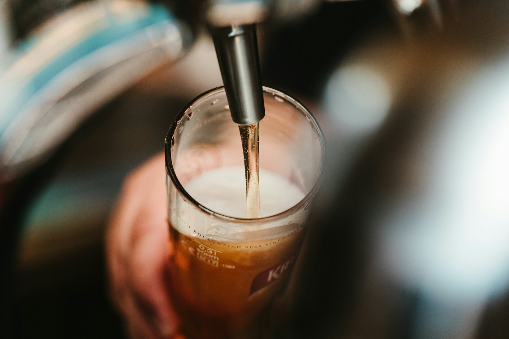

Markt 20, Delft
De Liefhebber
Een gezellig, klein, lokaal café met een groot terras, midden aan de Markt. Kom eens gezellig langs.
Welkom bij De Liefhebber
In Delft hoef je niet ver te zoeken: aan de Markt in het hartje van Delft vind je De Liefhebber.
Schuif aan bij de locals en luister naar de entertainende verhalen over ‘hun oude Delft’, of kies een tafeltje waarbij je uitkijkt over de gezellige Markt waar altijd wat gebeurt.
Dit alles onder genot van een hapje en een drankje: met een ruim assortiment aan onder andere jenevers en (Nederlandse) bieren heeft De Liefhebber voor ieder wat wils.
Kortom: alles zoals het echte liefhebbers betaamt!


Eten
Van een clubsandwich of uitsmijter tot een borrelplank of schnitzel. Dishes are described in Dutch and English.
Vegan Vegetarisch


Drinken
Een ruim assortiment jenevers en bieren, van de tap en uit de fles, plus wijn, gin & tonic en koffie.
Puttertje
Onze eigen jenever! Speciaal van De Liefhebber.
Openingstijden
| Maandag | 10:00 – 20:30 |
|---|---|
| Dinsdag | 10:00 – 20:30 |
| Woensdag | 10:00 – 20:30 |
| Donderdag | 10:00 – 20:30 |
| Vrijdag | 10:00 – 23:00 |
| Zaterdag | 10:00 – 23:00 |
| Zondag | 10:00 – 20:30 |
Contact
- Adres
- Markt 20
2611 GT Delft - Telefoon
- 015 364 2729
- info@liefhebber-delft.nl